Em 24 horas, uma estaca nasce.
Fabricamos e cravamos estacas pré-fabricadas de concreto protendido há 35 anos. Role a página e acompanhe a peça se formando na pista.
- 35 anos
- fabricando e cravando
- 24 h
- até o ensaio do lote
- 11 seções
- com ábaco próprio
Fabricamos e cravamos estacas pré-fabricadas de concreto protendido há 35 anos. Role a página e acompanhe a peça se formando na pista.
06:00
Os fios de aço CP-175 são esticados de uma cabeceira à outra da pista: seis por seção, oito na quadrada. A força que vai proteger a estaca nasce antes do concreto.
07:30
Na central própria, cimento, areia e brita são pesados em balanças calibradas. Cada metro cúbico fica registrado.
08:30
O concreto C40 é lançado sobre os fios tensos e adensado na fôrma metálica. Do mesmo lote saem os corpos de prova que vão contar a história desta peça.
10:00
A peça descansa na pista. Hora a hora, o concreto ganha resistência.
17:30
No fim da tarde a superfície já mudou: o concreto úmido e escuro fica claro e fosco. É a cura acontecendo.
22:00
O pátio escurece. A resistência do concreto continua subindo.
05:30 · 24 horas
Um corpo de prova do lote vai à prensa. É o resultado dele que libera a desmoldagem e o manuseio da peça. Outros serão rompidos com 3, 7 e 28 dias.
06:00 · Dia 2
Os fios são liberados nas cabeceiras e a força passa para o concreto. A fôrma abre.
Hexagonal Ø 33 · 6 fios Ø 6 mm CP-175 RB · segmentos de 6, 8 e 10 m
Seção hexagonal Ø 33 · 6 fios Ø 6 mm
Cada peça que você viu nascer tem desenho, ábaco e lote. Concreto C40, fios CP-175 tracionados e o ensaio de 24 horas registrado.
Seis paradas dentro da fábrica da IPR, na ordem em que a estaca passa por elas.


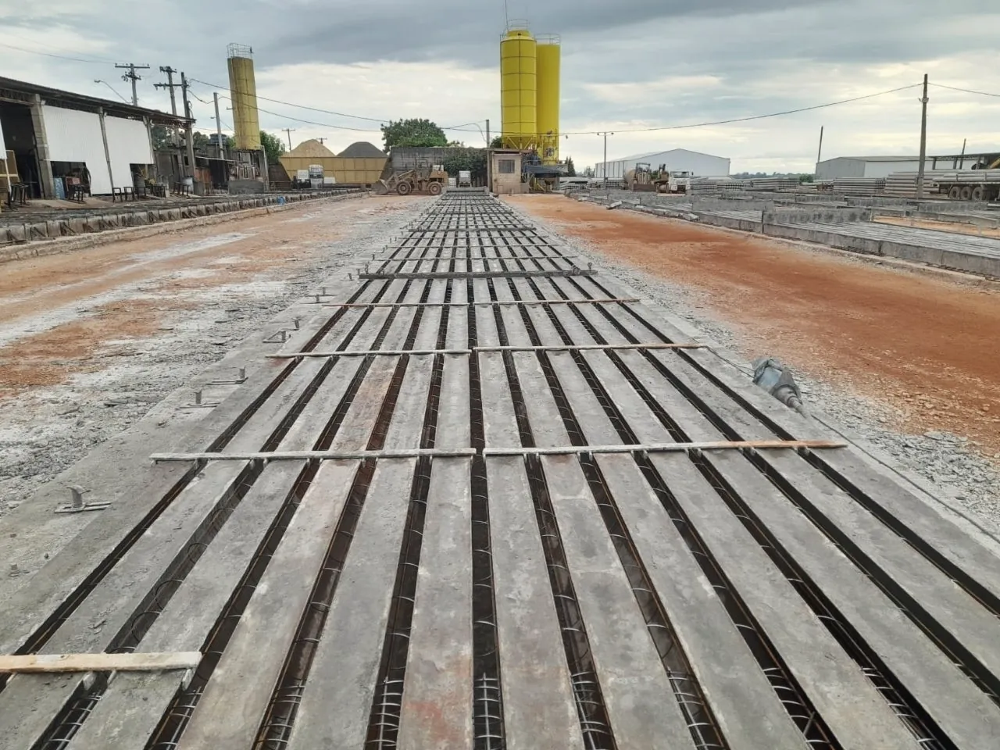
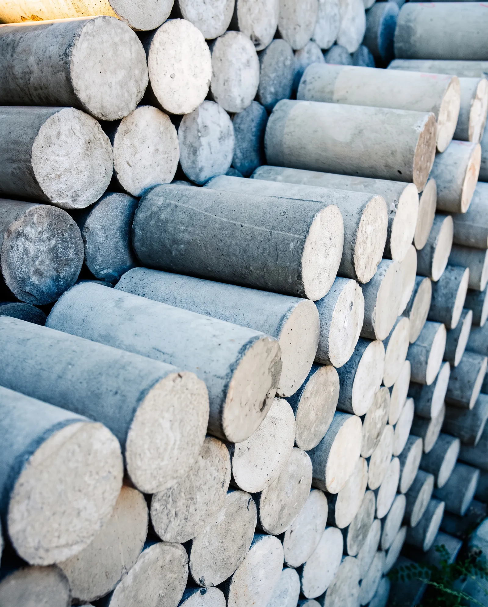
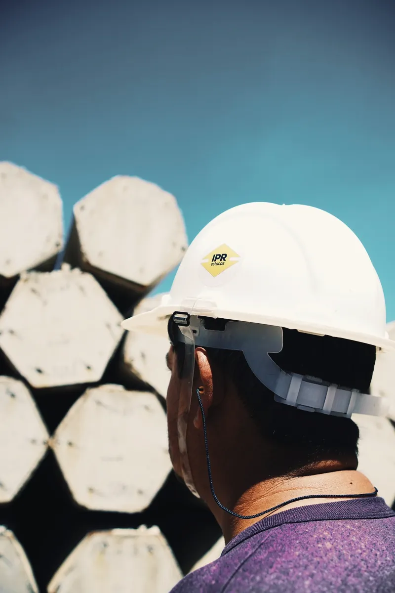
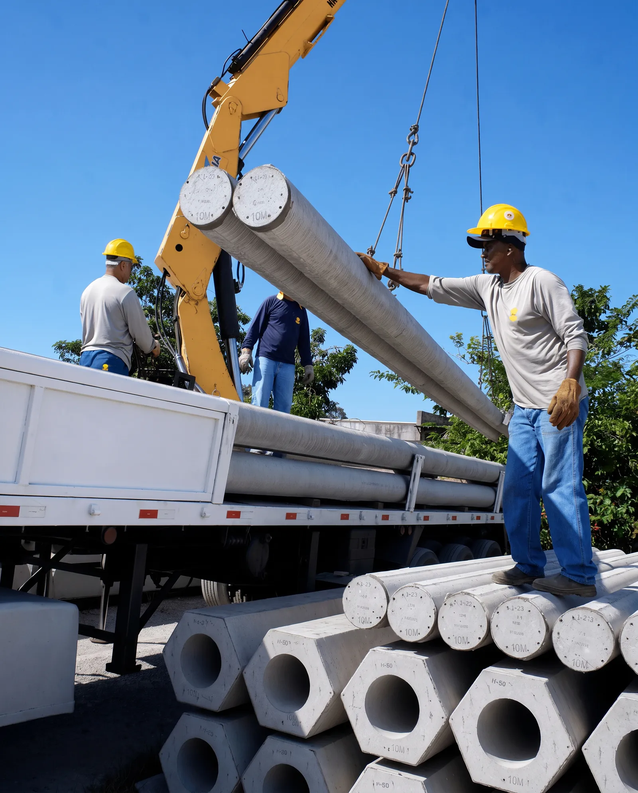
[ 01 / 06 ]
Cimento, areia e brita pesados em balanças calibradas. Cada metro cúbico fica registrado.
[ 02 / 06 ]
Fios de protensão CP-175 RB, lisos, de 4 a 6 mm, conferidos rolo a rolo antes da pista.
[ 03 / 06 ]
Os fios são tracionados de cabeceira a cabeceira e o concreto C40 é lançado nas fôrmas metálicas.
[ 04 / 06 ]
Corpos de prova do mesmo lote rompidos com 24 horas, 3, 7 e 28 dias. O de 24 horas libera a peça.
[ 05 / 06 ]
Cada estaca é conferida peça a peça: dimensão, alinhamento e superfície, antes de ir ao pátio.
[ 06 / 06 ]
A frota própria leva as estacas curadas do pátio direto para o canteiro.
Conheça a fábricaEscolha a geometria e a bitola. A estaca se monta de novo, da fôrma ao concreto curado, com os fios exatamente onde estão nos ábacos da IPR.
Arraste para girar · toque duplo volta
Depois das 24 horas
O bate-estacas é posicionado sobre o ponto locado em projeto. A estaca é içada e aprumada na torre-guia antes do primeiro golpe.
O martelo aplica golpes sucessivos e a estaca avança pelas camadas do solo. Sem retirada de terra, sem lama bentonítica e sem sobra de concreto no canteiro.
Para profundidades maiores que 10 m, um novo segmento é posicionado e unido por solda nos anéis de emenda.
A penetração final para um número determinado de golpes, a nega, e o repique elástico são medidos na hora e confrontados com o projeto.
Soluções
01 /
Estaca circular
Seis fios de protensão CP-175 distribuídos no anel. Segmentos de 6, 8 e 10 m, emendados por anel metálico soldado na obra.
Ver o ábaco02 /
Estaca hexagonal
Um fio junto a cada canto do hexágono. As seções maiores saem vazadas, com menos peso por metro e a mesma resistência.
Ver o ábaco03 /
Estaca quadrada
Oito fios de protensão, um em cada canto e um no meio de cada face. A maior capacidade de compressão do catálogo IPR.
Ver o ábaco04 /
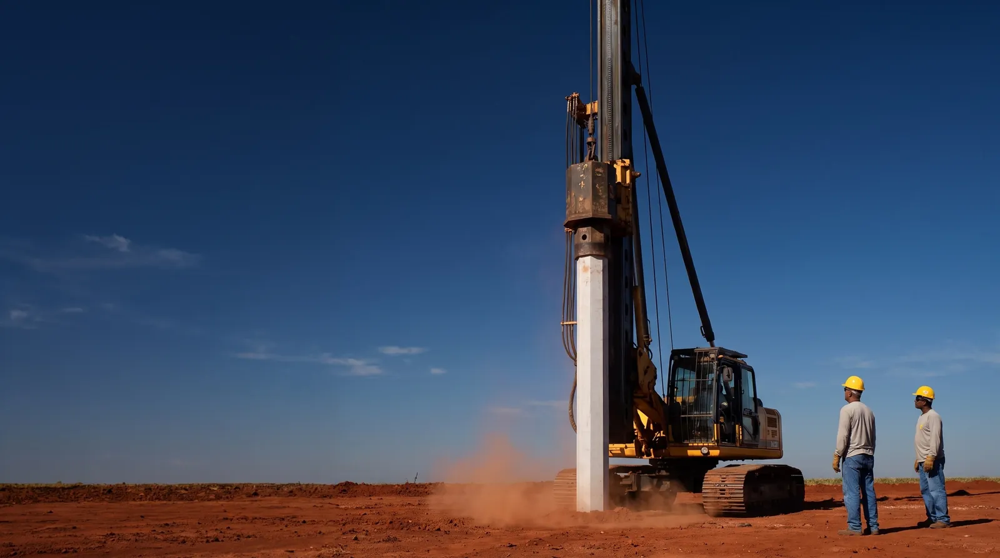
Cravação
Frota própria, bate-estacas e controle da nega estaca a estaca. Sem escavação, sem lama e sem sobra de concreto no canteiro.
Ver a fundaçãoObras
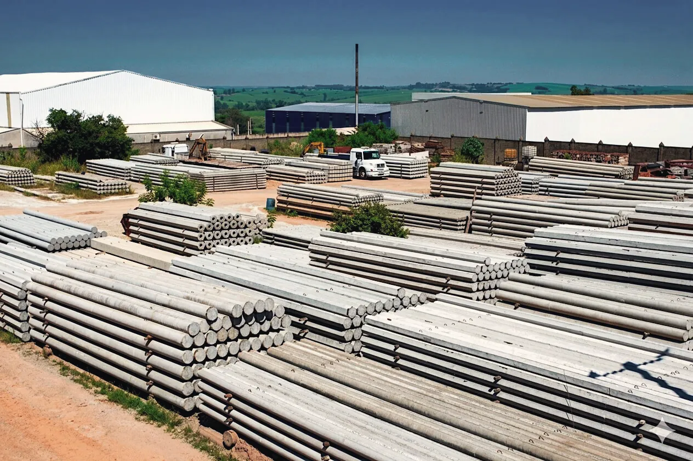
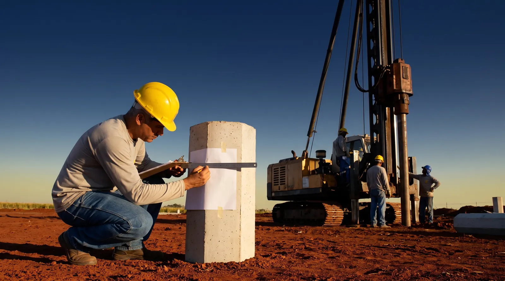
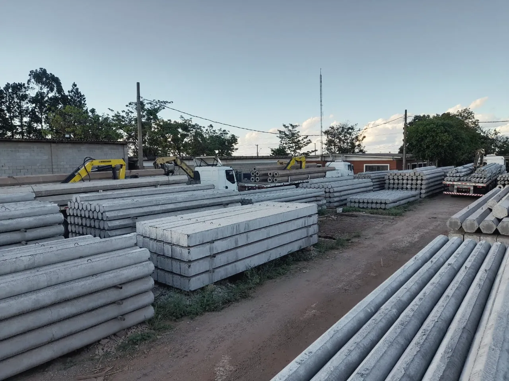


[ 01 ]
Estacas protendidas moldadas em pista, com fios CP-175 e concreto C40, nas seções circular, hexagonal e quadrada.
Ver as estacas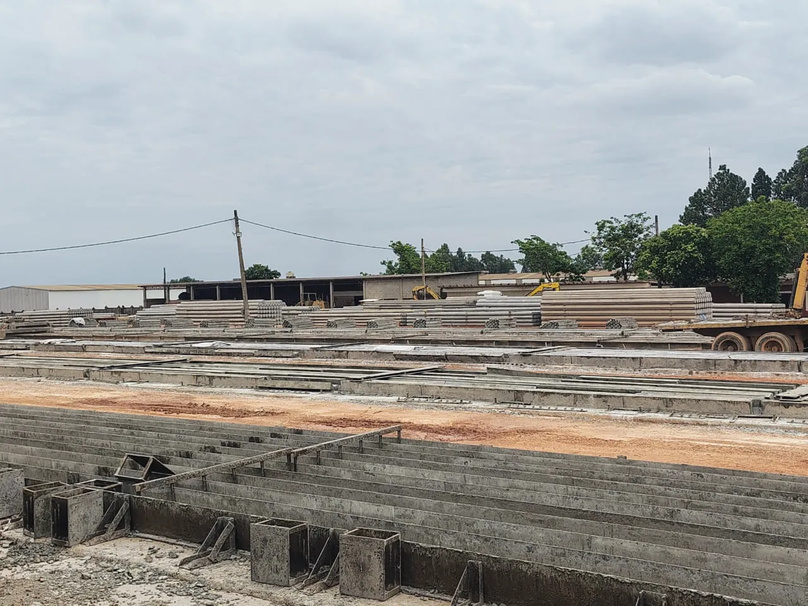
[ 02 ]
Cimento, areia e brita pesados em balanças calibradas. Cada metro cúbico fica registrado e ligado às estacas que moldou.
Conhecer a central[ 03 ]
Corpo de prova rompido com 24 horas antes da desmoldagem e inspeção de dimensão e superfície em todas as peças.
Ver os ensaios[ 04 ]
Frota própria leva as estacas do pátio de estocagem à obra, na ordem em que a equipe de cravação vai usar.
Ver a logística[ 05 ]
Bate-estacas e equipe da IPR no canteiro, com a nega de cada estaca medida e registrada. Sem escavação e sem lama.
Ver a fundação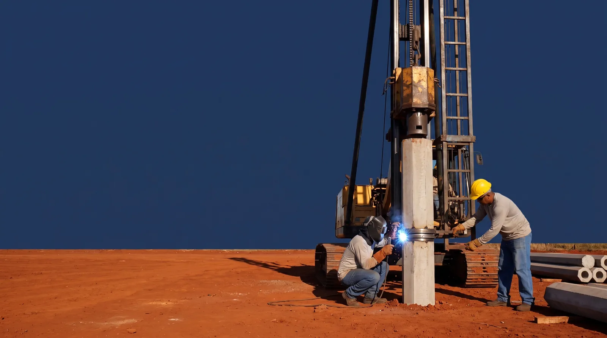
[ 01 ]
Seção, comprimento e número de estacas saem da sondagem e das cargas de projeto, antes da primeira cravação.
[ 02 ]
Cada lote de concreto é ensaiado e cada estaca é conferida antes de deixar o pátio. Nada sai sem registro.
[ 03 ]
Fábrica, frota e equipe próprias: quem molda a estaca é quem responde por ela até a nega na obra.
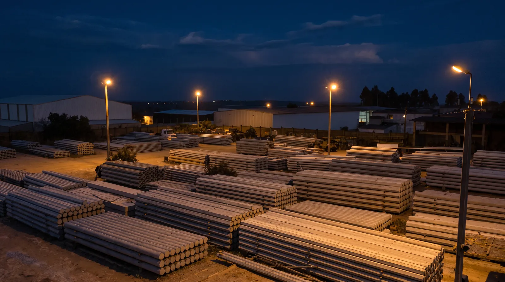

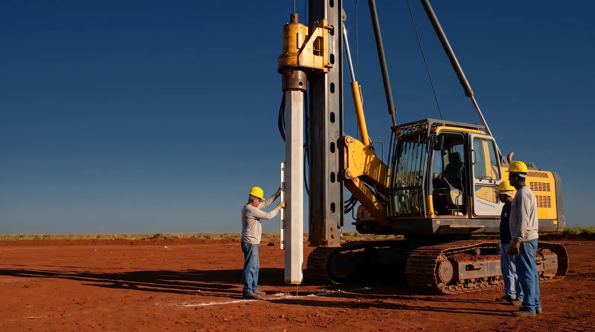
[ 35 anos de pátio ]
Garantias
Cada estaca fica ligada ao lote de concreto e aos ensaios desse lote, da balança da central ao registro da nega na obra.
Saiba maisUm corpo de prova do lote vai à prensa com 24 horas. É ele que libera a desmoldagem. Outros são rompidos com 3, 7 e 28 dias.
Saiba maisDimensão, alinhamento e superfície conferidos em todas as estacas antes de irem ao pátio de estocagem.
Saiba mais
A IPR tem central de concreto própria. Cimento, areia e brita são pesados em balanças calibradas e cada metro cúbico fica registrado, para que toda estaca receba o mesmo concreto C40.
Conhecer a centralCentral, laboratório, pátio de estocagem, frota e equipe de cravação: tudo da IPR. A mesma empresa responde pela estaca do concreto à nega.
Quem confia na IPR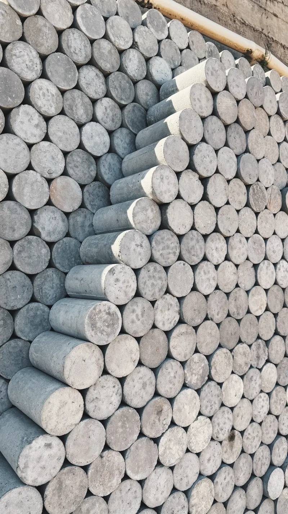
Conte o que a sua obra precisa. A engenharia da IPR indica a seção, o comprimento e o número de estacas a partir da sondagem e das cargas de projeto, verifica a cravação prevista e retorna com o orçamento e o prazo de entrega.